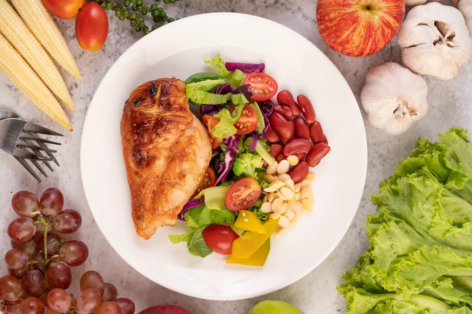
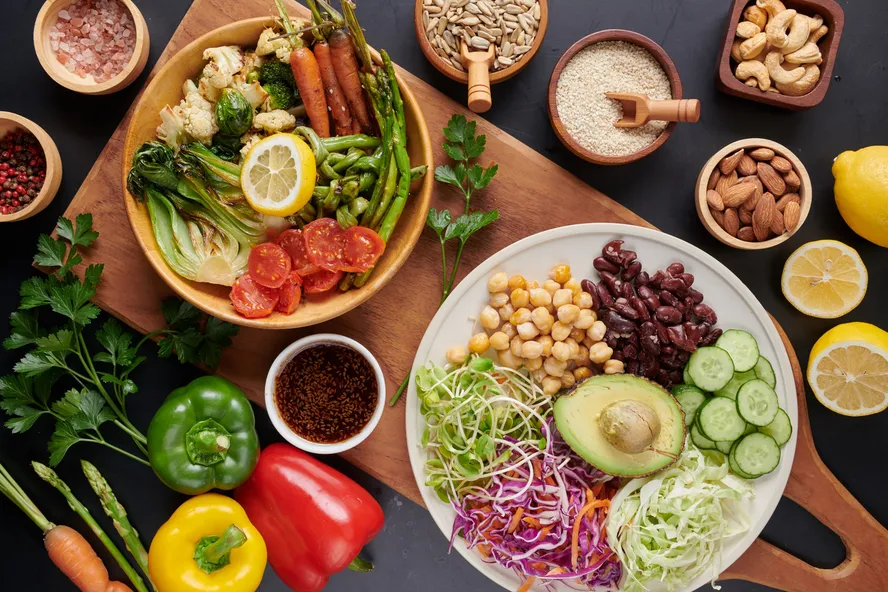

Dietas Populares

Dieta Low Carb
A dieta low carb tem atraído cada vez mais atenção nos últimos anos, tanto por suas promessas de perda de peso rápida quanto por seus potenciais benefícios metabólicos. Neste post, vamos explorar os princípios e características de uma dieta low carb, além de discutir seus possíveis benefícios e desafios.
Ver post

Dieta Vegetariana
A dieta vegetariana tem ganhado popularidade nos últimos anos, não apenas por razões éticas, mas também por seus potenciais benefícios à saúde e ao meio ambiente. Neste post, vamos explorar os princípios e características de uma dieta vegetariana, além de discutir seus possíveis benefícios e desafios.
Ver post
Dieta Mediterrânea
A dieta mediterrânea tem sido amplamente reconhecida por sua associação com uma vida longa e saudável, além de ser elogiada por seus benefícios ao coração e à saúde geral. Neste post, vamos explorar os princípios e características da dieta mediterrânea, além de discutir seus possíveis benefícios e desafios.
Ver post
Outros tipos de Dieta: Dieta Cetogênica, Dieta Paleo e Dieta Flexitariana
A escolha de uma dieta pode ser uma tarefa desafiadora, com tantas opções disponíveis. Neste post, vamos explorar três tipos de dieta populares: a dieta cetogênica, a dieta paleo e a dieta flexitariana. Cada uma dessas dietas tem seus próprios benefícios e desafios, e é importante escolher a que melhor se adapta aos seus objetivos e estilo de vida.
Ver post